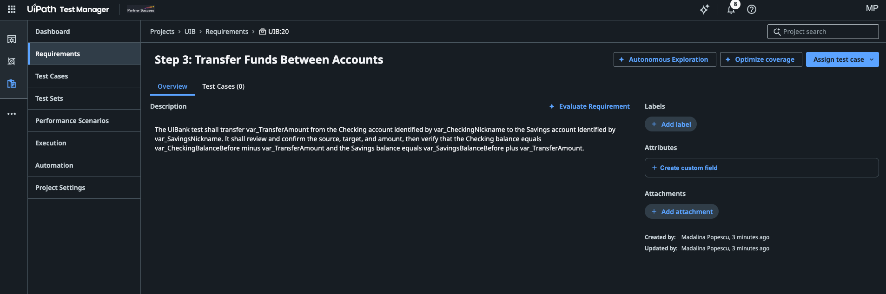

Hands-on · Part 1 of 4
📋 Requirements¶
- Your
{YourName}UiBankTestsproject open in Studio, connected to your {YourName}_UIB_Test Test Manager project. See Setup. - Test Manager open in your browser on the same tenant.
🪄 Ask Autopilot in Studio Desktop to create the requirements¶
The design document goes in, requirements come out, and nobody types them. Every later part builds on these requirements, so if one route fails, use the next.
- In Studio, open the Autopilot panel.
-
Attach
E2E UiBank Online Banking.docxto the conversation, then give Autopilot this prompt: -
Review what Autopilot proposes, then accept the requirements so they're saved to your Test Manager project.
Creating requirements from a document isn't among the documented Autopilot test tools in Studio yet. If Autopilot can't save them, use your coding agent.
Autopilot missing, or can't save the requirements?
Two usual causes. Studio is signed in to the wrong environment: the Autopilot features in this session are on UiPath Automation Cloud, so sign Studio in to https://cloud.uipath.com, org tpenlabs, tenant AgenticTestingWorkshop. Or the project isn't connected to your Test Manager project: check the Test Manager settings in Studio, or ask your coding agent to run uip rpa tm status in the project folder.
Start your coding agent in your workshop folder and give it this prompt:
Read ./E2E UiBank Online Banking.docx and create one requirement per step
in section 3, Step 0 to Step 7, in order, in my {YourName}_UIB_Test
Test Manager project, with the step's acceptance criteria in the
description. Confirm `uip login status` first.
The coding agent loads the uipath-test skill. There's no import command, so it runs uip tm requirements create once per step, eight times.
In Test Manager, open Requirements and select Create for each step. Name each requirement after the step title, and copy the step's validation into the description. It's slower, but it unblocks the rest of the day.
💬 Discuss the requirements in Test Manager¶
In Test Manager, refresh Requirements. You should see eight requirements, one per step of the design document, with keys {YourPrefix}:1 to {YourPrefix}:8. Autopilot's names and wording may differ from this:
0
Login and Initial Account State
{YourPrefix}:1 · Step 0
1
Checking Account Creation
{YourPrefix}:2 · Step 1
2
Savings Account Creation
{YourPrefix}:3 · Step 2
3
Funds Transfer Between Accounts
{YourPrefix}:4 · Step 3
4
Loan Application Submission
{YourPrefix}:5 · Step 4
5
Loan Status Lookup
{YourPrefix}:6 · Step 5
6
User Profile Identity Verification
{YourPrefix}:7 · Step 6
7
Logout and Evidence Collection
{YourPrefix}:8 · Step 7
Open two or three and discuss them as a group:
- Traceability. Can you tell from each requirement which step of the document it comes from?
- Testability. Could you write a pass/fail check for every acceptance criterion? Which ones are vague?
- Gaps. The document doesn't say what happens if a transfer is larger than the balance, or what the loan approval rules are. Did Autopilot notice, or did it skip them? Did it invent anything the document doesn't say?
Why one requirement per step
Eight small requirements are easier to evaluate, cover, and report on than one big one. When a test fails later, you know exactly which step, and which requirement, it affects.
🔍 Evaluate, improve, and re-evaluate with Autopilot in Test Manager¶
Test Manager's Evaluation Agent checks a requirement for clarity, completeness, and testability.
- Under Requirements, open Funds Transfer Between Accounts.
-
Select Evaluate Requirement, next to Description. Read Autopilot's findings and its suggestions.

The funds transfer requirement, with Evaluate Requirement next to Description. -
Implement two or three suggestions you agree with by editing the requirement. A typical one is a rule for a transfer larger than the source balance. If the document doesn't answer a question, write it down as an open question instead of making the answer up.
- Evaluate the requirement again. Did the result improve? Did Autopilot raise anything new?
- Repeat for Loan Application Submission, the requirement with the most undocumented rules.
Add your own prompts
Autopilot evaluates requirements with the prompts in the project's Prompt Library. Besides the predefined ones, such as Multifaceted Audit, Performance Evaluation, and Security Assessment, you can add custom prompts for your team's own quality rules:
- In Test Manager, select Project Settings in the project's left menu, then the Prompt library tab.
- Select Add prompt.
- In Create prompt, fill in:
- Name and Description, so others know when to use it.
- Mode of use: Evaluate requirement quality for an evaluation prompt. Other modes include Create tests from requirement, Import test cases, and Autonomous Exploration.
- Prompt: the instructions for Autopilot, as specific and detailed as possible.
- Select Create.
Your prompt then appears next to the predefined ones when you evaluate or re-evaluate a requirement.
Requirements done
Eight requirements generated by Autopilot from the design document, discussed, and at least two of them evaluated, improved, and re-evaluated.
Autopilot drafts, you decide
The Evaluation Agent is good at spotting vague wording and missing cases. It can't know your business rules. Every suggestion you accept is a decision about what UiBank must do, so a product owner should agree with it.